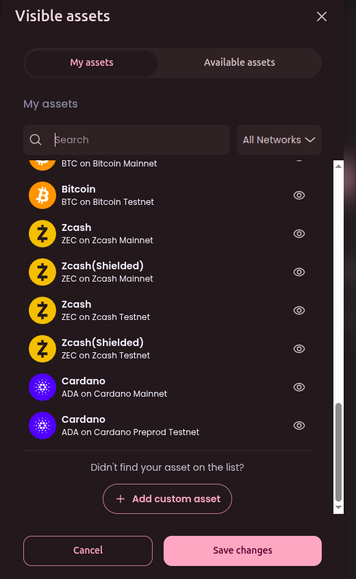

How to Add a Symbiosky Testnet Token (Asset) in Brave Wallet 🦁
✅ Step-by-Step Tutorial
1. Open Brave Wallet
- Click the wallet icon in the Brave browser toolbar OR
- Go to:
brave://wallet
2. Go to the Assets Tab
- Inside the wallet, open the “Assets” section.
3. Click “Add Asset”
- Look for the ➕ Add Asset button.
- Click it.

4. Select “Add Custom Asset”
- Choose “Add Custom Asset” (not from the default token list).

5. Enter Token Details
You will need to fill in:
- Network → Select correct network -> Arbitrum Sepolia
- Contract Address → Paste the token contract address
0x072A24E0C25a5D8c7F3f62146eF1900b5033e42d
- Token Name → SYSKY Token
- Token Symbol → SYSKY
- Decimals → 18
👉 Tip: Once you paste the contract address, Brave often auto-fills the rest.
6. Click “Add”
- Confirm by clicking Add Asset.
- Your token will now appear in your wallet.
⚠️ Important Tips
-
Always copy the contract address from trusted sources:
- Official project website
- Verified block explorers (arbiscan, Etherscan)
-
Wrong contract = fake token display.